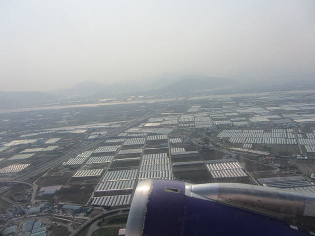
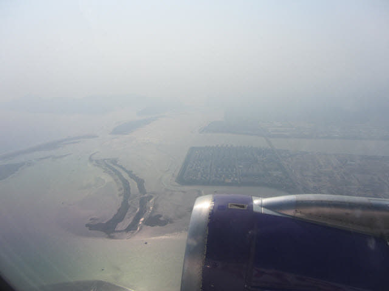

時間匆匆, 二十二天的韓國濟州、本島南部背包遊轉眼間來到了最後的一天。今天早上遊覽了釜山沙上近鄰公園, 早上十一時二十五分返回我們下榻的沙上區路易斯酒店, 負上重重的背囊, 於早上十一時五十分離開酒店, 步行往 Home plus 百貨大樓, 在6F 美食街享用完這旅程在韓國最後的一頓豐富午餐, 時間已經是中午十二時五十分, 我們是搭乘下午14:50的航班返回香港, 是時候離開了, 準備乘輕軌往釜山金海國際機場, 終於正式踏上歸途了!
再負上背囊, 離開 Home plus, 穿過百貨大樓前的廣場。
輕軌 掛法 Renecite 站乘輕軌往釜山金海國際機場
輕軌 掛法 Renecite 站 就在 Home plus 百貨公司對面, 乘手扶電梯往天橋上的月台, 準備乘輕軌往釜山金海國際機場, 旅程終於來到尾聲的部份了。
釜山金海國際機場
等了一會, 登上了輕軌, 約六分鐘便抵達釜山金海國際機場站, 車票只是 1,300 韓元。走出輕軌站, 步行一會便來到機場大樓。
濫用職權海關女職員 辦理出境手續遇上非常不愉快的事情
進入釜山金海國際機場大樓, 往2F離境大堂辦理出境手續。這次在辦理出境手續時遇上一件非常不愉快的事情。其實本來是一件很少的事情, 只是韓國海關女職員濫用職權, 令我對韓國突然產生反感、厭惡和恐懼, 可能影響未來幾年內是否繼續往韓國旅遊的決定。
本想將這件事刪除的, 但又實在不吐不快!
事情就發生在這一盒小小的潤喉香口膠。
當我的隨身行李過安檢時, 檢查員從超聲波發覺問題, 一位海關女職員便按檢查員的指示去檢查我的背囊, 她發現可疑物件原來只是一盒潤喉香口膠, 便笑著拿去告訴檢查員。本以為事情就這樣完結, 怎料海關女職員好像閒來沒事做, 既然已經檢查開, 便一於繼續查下去。本來也是很簡單, 我什麼也沒有買, 背囊只有幾件衣服、旅遊資料和一些日用品, 根本沒什麼可以查的, 心想不消半分鐘便可以。
殊不知, 那位海關女職員當作我是間諜般看待, 將我背囊內的衣服全部續件仰開, 所有衣袋都要翻開檢查, 而且是切底仰開那種, 不消一會, 整個桌子上都是亂七八糟的衣服, 非常沒有禮貌, 接著還變本加厲, 將我的日用品統統從小包中倒出, 續件檢查! 最重要是行為非常卑劣, 檢查完的物件不是放回桌上, 而是從手中反手一放, 跌落桌上。
她可能看見我的行李太簡單, 沒什麼好玩, 便索性翻開我的日記簿、筆、旅遊資料……., 我感覺到她在暗暗地笑, 這時我已經到達忍無可忍的地步, 放聲罵她, 罵她想找什麼? 究竟在我的行李發現了什麼? 究竟在我的行李發現了什麼? 頓時驚動所有旅客和職員, 我太太這時也走來問我發生什麼事, 叫我保持冷靜。畢竟人的忍耐是有極限的, 我當時差點兒便忍不住衝口用了 Fuck、Damn 和 Bitch 這些骯臟字, 也不理會後果會是如何。
這時另一位韓國海關男職員走來看看發生什麼事, 我對他大聲說你們究竟在我的行李發現了什麼? 我要見你們的主管。他望了一望, 便說: 「Okay! Okay! 你可以走啦!」 那位無恥的海關女職員面目醜陋猙獰地暗暗一笑, 才轉身離開。
這是我四十多年的自助旅遊生涯中受到最無禮對待的一次! 最傷心的是: 不是發生在一些落後國家或沒有民主的國家, 竟然是發生在韓國! 我經常來的韓國!
最後花了十多分鐘才勉強整理好所有物品, 擠回背囊內, 然後步行往登機閘前的候機室, 不斷心疑疑的不知道有沒有遺漏了一些重要物件。
以往都喜歡離開前參觀機場大樓和拍照, 但怒火(其實應該是對韓國的極度失望多於怒火)在接著的一小時多都久久未能熄滅, 根本沒有心情拍照, 更沒有心情寫日記。
約下午二時十五分開始登機, 這時低落的心情才開始慢慢恢復過來。
按原定的航班時刻表, 飛機是在下午二時五十分起飛的, 但不知什麼原因, 有一位乘客遲遲未能登機, 飛機唯有在等, 最後等了約四十五分鐘, 那位乘客始終沒有出現, 而機長終於宣佈飛機現在準備起飛!
飛機約下午三時三十分終於緩緩起動, 離開登機大樓。
飛機在跑道滑行一段距離後, 停下來等了一會, 不久油門不斷隆隆的加大, 接著沿跑道全速前進, 機頭拉高, 一飛沖天。


當飛機飛離陸地, 進入海洋, 便正式離開韓國。

每次乘搭飛機都很喜歡看一望無際, 變化多端的雲海, 大自然真是十分奧秘! 其實人的性格可能更加奧秘! 為何總是喜歡捉弄他人? 為何總是喜歡傷害他人?
接著將手錶的時間往後撥慢一小時, 剛才發生不愉快的事情已經淡忘, 接著腦海裡又不斷回想這二十二天行程中的一些精彩片段。
飛機約於香港時間下午六時三十分安全降落香港國際機場, 。
和以往一樣, 因沒有行李寄艙, 很快便辦理完入境手續。進入入境大堂, 望望手錶, 已經下午六時四十五分, 便決定往 Terminal 2 大樓 L6 餐廳區吃晚餐, 這裡的食物價廉物美, 而且座位也寬敞舒適很多, 近幾年已經成為我們旅程出發和回程的飯堂。
燒味店的燒味飯是全場最抵吃的, 不用想其他食店啦! 我叫了一碟燒鴨飯, 她叫了一碟切雞飯。不知是否連續吃了二十二天的韓國菜, 感覺燒鴨和切雞超好味, 而且還很有親切感。
吃完晚餐, 離開 Terminal 2 大樓, 慢慢走出機場大樓外的巴士綜合站。在巴士站等了一會, 接著搭乘晚上八時十分班次的A31號機場巴士。沿途交通十分暢順, 約於晚上九時二十分抵達愉景新城。
下了車, 負上重重的背包, 慢慢步行回到家中, 已經是晚上九時三十分, 放下背包, 正式為這「2017年韓國濟州、本島南部春天二十二天背包遊」劃上完美句號。